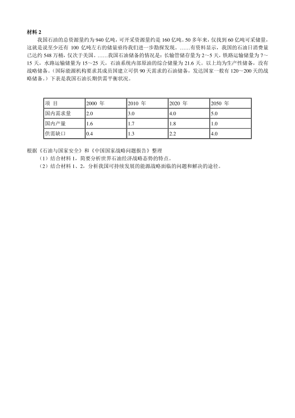

第 1 / 6 页
2005 年硕士研究生入学考试政治试题
一、单项选择题：1～15 小题，每小题1 分，共15 分。下列每题给出的四个选项中，只有一个选项是符合
试题要求的。请在答题卡上将所选项的字母涂黑。
1、广大农民在致富奔小康的过程中深切体会到：“要富口袋，先富脑袋”，这一说法在哲学上的含义是
A、精神是第一性的，物质是第二性的
B、精神的力量可以变成物质的力量
C、精神的力量可以代替物质的力量
D、先有精神，后有物质
2、“当一位杰出的老科学家说什么是可能的时候，他差不多总是对的；但当他说什么是不可能的时候，他
差不多总是错的。”这一名言的哲学意蕴是
A、在科学研究中，经验是不可靠的
B、事物的可能性是因人而异的
C、世界上一切事物只有可能性，没有不可能性
D、每代人所获得的真理性认识，既有绝对性，又有相对性
3、未来学家尼葛洛庞蒂说：“预测未来的最好办法就是把它创造出来。”从认识与实践的关系看，这句活对
我们的启示是
A、认识总是滞后于实战
B、实践是认识的先导
C、实践高于认识
C、实践与认识是合一的
4、第十届全国人大二次会议通过的宪法修正案，将“国家尊重和保障人权”写入宪法。这标志着
A、我国社会主义生产关系的完善
B、我国社会主义政治文明的进步
C、我国社会主义物质文明的发展
D、我国社会主义精神文明的升华
5、在市场上，一台笔记本电脑的标价是12000 元，此时执行价值尺度职能的货币是
A、实在的货币
B、信用货币
C、观念上的货币
D、现金
6、某企业有一台高精度磨床，价值为20000 元，使用年限为10 年，目前已使用2 年。这时由于生产该种
设备的劳动生产率提高，所需社会必要劳动时间减少，其价值降为15000 元。此时，这台高精度磨床的物
质磨损是
A、1000 元
B、2000 元
C、3000 元
D、4000 元
7、社会主义社会实行按劳分配的前提条件是
A、旧的社会分工的存在，劳动还是谋生的手段
B、社会主义生产力发展的水平
C、社会主义生产资料公有制
D、社全主义市场经济体制的建立
8、土地革命战争时期、毛泽东指出：“一国之内，在四周白色政权的包围中，有一小块或若干小块红色政
权的区域长期地存在，这是世界各国从来没有的事。这种奇事的发生，有其独特的原因。”红色政权能够存
在和发展的根本原因是
A、中国是一个经济政治发展极端不平衡的半殖民地半封建大国
B、国民革命的政治影响及良好的群众基础
C、全国革命形势的继续发展
D、相当力量的正式红军的存在以及共产党组织的坚强有力和正确领导
9、建国初期，中国共产党在土地改革中对富农的政策是
A、征收富农多余的土地财产
B、消灭富农经济
C、保存富农经济
D、限制富农经济
10、“我们的共产党和共产党领导的八路军、新四军，是革命的队伍。我们这个队伍完全是为着解放人民的，
是彻底地为人民的利益工作的。”这段话所反映的思想观点是
A、一切为了群众，一切依靠群众
B、从群众中来，到群众中去
C、一切从实际出发，理论联系实际
D、自力更生、艰苦奋斗
查看 / 复制本页文字
2005 年硕士研究生入学考试政治试题 一、单项选择题：1～15 小题，每小题1 分，共15 分。下列每题给出的四个选项中，只有一个选项是符合 试题要求的。请在答题卡上将所选项的字母涂黑。 1、广大农民在致富奔小康的过程中深切体会到：“要富口袋，先富脑袋”，这一说法在哲学上的含义是 A、精神是第一性的，物质是第二性的 B、精神的力量可以变成物质的力量 C、精神的力量可以代替物质的力量 D、先有精神，后有物质 2、“当一位杰出的老科学家说什么是可能的时候，他差不多总是对的；但当他说什么是不可能的时候，他 差不多总是错的。”这一名言的哲学意蕴是 A、在科学研究中，经验是不可靠的 B、事物的可能性是因人而异的 C、世界上一切事物只有可能性，没有不可能性 D、每代人所获得的真理性认识，既有绝对性，又有相对性 3、未来学家尼葛洛庞蒂说：“预测未来的最好办法就是把它创造出来。”从认识与实践的关系看，这句活对 我们的启示是 A、认识总是滞后于实战 B、实践是认识的先导 C、实践高于认识 C、实践与认识是合一的 4、第十届全国人大二次会议通过的宪法修正案，将“国家尊重和保障人权”写入宪法。这标志着 A、我国社会主义生产关系的完善 B、我国社会主义政治文明的进步 C、我国社会主义物质文明的发展 D、我国社会主义精神文明的升华 5、在市场上，一台笔记本电脑的标价是12000 元，此时执行价值尺度职能的货币是 A、实在的货币 B、信用货币 C、观念上的货币 D、现金 6、某企业有一台高精度磨床，价值为20000 元，使用年限为10 年，目前已使用2 年。这时由于生产该种 设备的劳动生产率提高，所需社会必要劳动时间减少，其价值降为15000 元。此时，这台高精度磨床的物 质磨损是 A、1000 元 B、2000 元 C、3000 元 D、4000 元 7、社会主义社会实行按劳分配的前提条件是 A、旧的社会分工的存在，劳动还是谋生的手段 B、社会主义生产力发展的水平 C、社会主义生产资料公有制 D、社全主义市场经济体制的建立 8、土地革命战争时期、毛泽东指出：“一国之内，在四周白色政权的包围中，有一小块或若干小块红色政 权的区域长期地存在，这是世界各国从来没有的事。这种奇事的发生，有其独特的原因。”红色政权能够存 在和发展的根本原因是 A、中国是一个经济政治发展极端不平衡的半殖民地半封建大国 B、国民革命的政治影响及良好的群众基础 C、全国革命形势的继续发展 D、相当力量的正式红军的存在以及共产党组织的坚强有力和正确领导 9、建国初期，中国共产党在土地改革中对富农的政策是 A、征收富农多余的土地财产 B、消灭富农经济 C、保存富农经济 D、限制富农经济 10、“我们的共产党和共产党领导的八路军、新四军，是革命的队伍。我们这个队伍完全是为着解放人民的， 是彻底地为人民的利益工作的。”这段话所反映的思想观点是 A、一切为了群众，一切依靠群众 B、从群众中来，到群众中去 C、一切从实际出发，理论联系实际 D、自力更生、艰苦奋斗
第 2 / 6 页
11、邓小平理论首要的基本理论问题是
A、发展才是硬道理
B、发展是党执政兴国的第一要务
C、解放生产力，发展生产力
D、什么是社会主义，怎样建设社会主义
12、在社会主义市场经济条件下，坚持为人民服务的价值取向，关键是要
A、发扬艰苦奋斗的精神
B、弘扬爱国主义精神
C、正确处理国家、集体、个人三者之间的利益关系
D、发扬顾全大局、诚信友爱、扶贫济困的精神
13、科学技术是第一生产力，国家之间的竞争更多的将是科技力量的竞争，归根到底是
A、经济实力的竞争
B、人才的竞争
C、军事实力的竞争
D、政治实力的竞争
14、2003 年12 月31 日出台的《中共中央国务院关于促进农民增加收入若干政策的意见》提出，当前和今
后一个时期做好农民增收工作的方针是
A、“粮食增产、农民增收、农业增效”
B、“以工促农、以城带乡”
C、“多予、少取、放活”
D、“统筹、协调、扶持”
15、以色列议会于2004 年10 月26 日通过了沙龙总理提出的计划。根据计划，以色列将在2005 年底前撤
出加沙地带所有的犹太人定居点和约旦河西岸4 个定居点。这一计划称为
A、双边行动计划
B、单边行动计划
C、“路线图”计划
D、中东和平计划
二、多项选择题：16～30 小题，每小题2 分，共30 分。下列每题给出的四个选项中，至少有一个选项是
符合试题要求的。请在答题卡上将所选项的字母涂黑。多选、少选或错选均不得分。
16、据媒体报道，美国哥伦比亚大学的社会学家利用互联网技术做了一次实验，证明只要通过“电子邮件的
6 次信息接力”，一个人就可以同世界上任何一个陌生人联系上。这表明
A、世界是相互联系的统一整体
B、事物之间的联系都是认为的
C、世界的普遍联系是通过“中介”实现的
D、信息是世界普遍联系的基础
17、党的十六大指出，要不断深化对共产党执政规律、社会主义建设规律、人类社会发展规律的认识。这“三
大规律”
A、是有层次的
B、都是人的活动的规律
C、是人们在改造社会的实践活动中创造的规律
D、存在着个别、特殊和一般的关系
18、资本主义地租中的绝对地租
A、是农产品价值超过社会主义生产价格以上的超额利润
B、形成的条件是农业资本有机构成低于社会平均的资本有机构成
C、形成的原因是对土地的资本主义经营垄断
D、来源于农业工人创造的剩余价值
19、在我国现存的所有制结构中，私营经济
A、不受公有制经济的影响和制约
B、以生产资料私人占有和雇佣劳动为基础
C、是由社会主义初级阶段的生产力发展状况决定其存在的
D、是社会主义市场经济的重要组成部分
20、规范市场秩序所要建立健全的社会信用制度要以
A、道德为支撑
B、行政为主导
C、产权为基础
D、法律为保障
查看 / 复制本页文字
11、邓小平理论首要的基本理论问题是 A、发展才是硬道理 B、发展是党执政兴国的第一要务 C、解放生产力，发展生产力 D、什么是社会主义，怎样建设社会主义 12、在社会主义市场经济条件下，坚持为人民服务的价值取向，关键是要 A、发扬艰苦奋斗的精神 B、弘扬爱国主义精神 C、正确处理国家、集体、个人三者之间的利益关系 D、发扬顾全大局、诚信友爱、扶贫济困的精神 13、科学技术是第一生产力，国家之间的竞争更多的将是科技力量的竞争，归根到底是 A、经济实力的竞争 B、人才的竞争 C、军事实力的竞争 D、政治实力的竞争 14、2003 年12 月31 日出台的《中共中央国务院关于促进农民增加收入若干政策的意见》提出，当前和今 后一个时期做好农民增收工作的方针是 A、“粮食增产、农民增收、农业增效” B、“以工促农、以城带乡” C、“多予、少取、放活” D、“统筹、协调、扶持” 15、以色列议会于2004 年10 月26 日通过了沙龙总理提出的计划。根据计划，以色列将在2005 年底前撤 出加沙地带所有的犹太人定居点和约旦河西岸4 个定居点。这一计划称为 A、双边行动计划 B、单边行动计划 C、“路线图”计划 D、中东和平计划 二、多项选择题：16～30 小题，每小题2 分，共30 分。下列每题给出的四个选项中，至少有一个选项是 符合试题要求的。请在答题卡上将所选项的字母涂黑。多选、少选或错选均不得分。 16、据媒体报道，美国哥伦比亚大学的社会学家利用互联网技术做了一次实验，证明只要通过“电子邮件的 6 次信息接力”，一个人就可以同世界上任何一个陌生人联系上。这表明 A、世界是相互联系的统一整体 B、事物之间的联系都是认为的 C、世界的普遍联系是通过“中介”实现的 D、信息是世界普遍联系的基础 17、党的十六大指出，要不断深化对共产党执政规律、社会主义建设规律、人类社会发展规律的认识。这“三 大规律” A、是有层次的 B、都是人的活动的规律 C、是人们在改造社会的实践活动中创造的规律 D、存在着个别、特殊和一般的关系 18、资本主义地租中的绝对地租 A、是农产品价值超过社会主义生产价格以上的超额利润 B、形成的条件是农业资本有机构成低于社会平均的资本有机构成 C、形成的原因是对土地的资本主义经营垄断 D、来源于农业工人创造的剩余价值 19、在我国现存的所有制结构中，私营经济 A、不受公有制经济的影响和制约 B、以生产资料私人占有和雇佣劳动为基础 C、是由社会主义初级阶段的生产力发展状况决定其存在的 D、是社会主义市场经济的重要组成部分 20、规范市场秩序所要建立健全的社会信用制度要以 A、道德为支撑 B、行政为主导 C、产权为基础 D、法律为保障
第 3 / 6 页
21、近代中国社会的阶级结构是“两头小中间大”，“两头”是指
A、无产阶级
B、农民阶级
C、地主大资产阶级
D、城市小资产阶级
22、在新民主主义革命时期，中国共产党的建设面临的特殊困难是
A、党的理论长时期准备不足
B、中国社会封建思想的影响
C、农民和小资产阶级出身的革命者大量入党，使党处于小资产阶级思想的包围之中
D、共产国际在一段时期内存在的教条主义倾向对中国共产党的影响
23、1956 年召开的中共八大通过的政治报告指出，我国国内的主要矛盾是
A、工人阶级同民族资产阶级之间的矛盾
B、人民对建立先进的工业国的要求同落后的农业国的现实之间的矛盾
C、发展重工业和发展农业、轻工业之间的矛盾
D、人民对于经济文化迅速发展的需要同当前经济文化不能满足人民需要的状况之间的矛盾
24、坚持与时俱进，就是党的全部理论和全部工作要
A、体现时代性
B、把握规律性
C、富于创造性
D、注重协调性
25、我国走新型工业化道路必须大力推进产业结构优化升级，形成新的产业格局，其主要内容有
A、以高新技术产业为先导
B、以基础产业和制造业为支撑
C、大力发展劳动密集型产业
D、服务业全面发展
26、依法治国是党领导人民治理国家的基本方略，实行依法治国具有重大而深远的意义
A、依法治国是发展社会主义市场经济的客观要求
B、依法治国是建设社会主义民主政治的基本保证
C、依法治国是社会主义文明进步的重要标志
D、依法治国是维护社会稳定、国家长治久安的重要保障
27、党的十六届四中全会通过的《中共中央关于加强党的执政能力建设的决定》指出，不断完善党的领导
方式和执政方式，必须坚持
A、科学执政
B、民主执政
C、依法执政
D、有效执政
28、加强党的执政能力建设，不断提高构建社会主义和谐社会的能力的主要内容包括
A、全面贯彻尊重劳动、尊重知识、尊重人才、尊重创造的方针，不断增强全社会的创造活力
B、妥善协调各方面的利益关系，正确处理人民内部矛盾；健全工作机制，维护社会稳定
C、加强社会建设和管理，推进社会管理体制创新
D、坚持党的群众路线，加强和改进新形势下的群众工作
29、从2003 年8 月至2004 年6 月，朝核问题第一、二、三轮六方会谈均在北京举行，中国在解决朝核问
题上发挥的作用主要有
A、提出了和平解决朝核问题的总体目标、方向核途径，并得到广泛认同
B、推动形成了六方会谈框架，现已成为一个持续的过程
C、发挥了作为东道主的斡旋和调停作用，得到各方面的肯定
D、促成了朝韩双方《关于朝鲜半岛无核化共同宣言》的签订
30、坚持以人为本，这是科学发展观的本质和核心。以人为本，就是要把人民的利益作为一切工作的出发
点和落脚点，不断满足人们的多方面需求和促进人的全面发展。具体地说，就是
A、在经济发展的基础上，不断提高人民群众物质文化生活水平和健康水平
B、要尊重和保障人权，包括公民的政治、经济、文化权利
C、要不断提高人们的思想道德素质、科学文化素质和健康素质
D、要创造人们平等发展、充分发挥聪明才智的社会环境
三、辨析题：31～33 小题，每小题6 分，共18 分。要求对所给命题或观点进行辨别、分析，观点正确，
查看 / 复制本页文字
21、近代中国社会的阶级结构是“两头小中间大”，“两头”是指 A、无产阶级 B、农民阶级 C、地主大资产阶级 D、城市小资产阶级 22、在新民主主义革命时期，中国共产党的建设面临的特殊困难是 A、党的理论长时期准备不足 B、中国社会封建思想的影响 C、农民和小资产阶级出身的革命者大量入党，使党处于小资产阶级思想的包围之中 D、共产国际在一段时期内存在的教条主义倾向对中国共产党的影响 23、1956 年召开的中共八大通过的政治报告指出，我国国内的主要矛盾是 A、工人阶级同民族资产阶级之间的矛盾 B、人民对建立先进的工业国的要求同落后的农业国的现实之间的矛盾 C、发展重工业和发展农业、轻工业之间的矛盾 D、人民对于经济文化迅速发展的需要同当前经济文化不能满足人民需要的状况之间的矛盾 24、坚持与时俱进，就是党的全部理论和全部工作要 A、体现时代性 B、把握规律性 C、富于创造性 D、注重协调性 25、我国走新型工业化道路必须大力推进产业结构优化升级，形成新的产业格局，其主要内容有 A、以高新技术产业为先导 B、以基础产业和制造业为支撑 C、大力发展劳动密集型产业 D、服务业全面发展 26、依法治国是党领导人民治理国家的基本方略，实行依法治国具有重大而深远的意义 A、依法治国是发展社会主义市场经济的客观要求 B、依法治国是建设社会主义民主政治的基本保证 C、依法治国是社会主义文明进步的重要标志 D、依法治国是维护社会稳定、国家长治久安的重要保障 27、党的十六届四中全会通过的《中共中央关于加强党的执政能力建设的决定》指出，不断完善党的领导 方式和执政方式，必须坚持 A、科学执政 B、民主执政 C、依法执政 D、有效执政 28、加强党的执政能力建设，不断提高构建社会主义和谐社会的能力的主要内容包括 A、全面贯彻尊重劳动、尊重知识、尊重人才、尊重创造的方针，不断增强全社会的创造活力 B、妥善协调各方面的利益关系，正确处理人民内部矛盾；健全工作机制，维护社会稳定 C、加强社会建设和管理，推进社会管理体制创新 D、坚持党的群众路线，加强和改进新形势下的群众工作 29、从2003 年8 月至2004 年6 月，朝核问题第一、二、三轮六方会谈均在北京举行，中国在解决朝核问 题上发挥的作用主要有 A、提出了和平解决朝核问题的总体目标、方向核途径，并得到广泛认同 B、推动形成了六方会谈框架，现已成为一个持续的过程 C、发挥了作为东道主的斡旋和调停作用，得到各方面的肯定 D、促成了朝韩双方《关于朝鲜半岛无核化共同宣言》的签订 30、坚持以人为本，这是科学发展观的本质和核心。以人为本，就是要把人民的利益作为一切工作的出发 点和落脚点，不断满足人们的多方面需求和促进人的全面发展。具体地说，就是 A、在经济发展的基础上，不断提高人民群众物质文化生活水平和健康水平 B、要尊重和保障人权，包括公民的政治、经济、文化权利 C、要不断提高人们的思想道德素质、科学文化素质和健康素质 D、要创造人们平等发展、充分发挥聪明才智的社会环境 三、辨析题：31～33 小题，每小题6 分，共18 分。要求对所给命题或观点进行辨别、分析，观点正确，
第 4 / 6 页
言之成理。将答案写在答题纸相应位置上。
31、元代许衡一年夏天外出，天热口渴难耐，刚好道旁有棵梨树，众人争相摘梨解渴，惟独许衡不为
所动。有人问他为何不摘？他回答说：“不是自己的梨，岂能乱摘！”那人劝解道：“这梨是没有主人的。”
许衡答道：“梨无主人，难道我心中也无主吗？”
请透过“这道旁的梨该不该摘？”这一问题，用马克思主义哲学价值观的有关原理对上述材料加以辨析。
32、以劳动力形式存在的流动资本，它的价值同原料、燃料和辅助材料等劳动对象的价值一样都是一
次性地转移到新产品中去。
33、按照我国全面建设小康社会的要求，到2020 年我国人均国内生产总值将由1000 美元达到3000 美
元。这是我国社会主义现代化进程中的一个关键时期，它既是一个“黄金发展期”又是“矛盾凸现期”。稳定与
发展似乎成了两难选择。有人认为，为了确保稳定，就要限制发展。
请结合材料，辨折这一观点。
四、分析题：34～36 小题，每小题9 分，37 小题10 分，共37 分。要求结合所学知识分析材料回答问题。
将答案写在答题纸相应位置上。
34、在数月前由国家有关部门举办的一次大型科普展中，有一个别具匠心的设计：三扇门上各有一个
问题：“污染环境的是谁？”“饱受环境恶化之苦的是谁？”“保护环境的是谁？”拉开门，里面各是一面镜子，
照出的是参观者自己。
请回答：
（1）这一精巧的设计反映了人类实践活动中的什么基本关系？
（2）如何理解“我们不要过分陶醉于我们人类对自然界的胜利。对于每一次这样的胜利，自然界都对
我们进行报复”？
（3）用辩证法关于度的观点说明：“地球能够满足人类的需要，但不能满足人类的贪婪。”
35、党的十六届三中全会提出，把扩大就业放在经济社会发展更加突出的位置，实施积极的就业政策，
努力改善创业和就业环境。下表的数据反映了我国20 世纪80-90 年代以来，经济增长和就业增长的演变状
况。
单位：％
*就业弹性系数指就业速度与经济增长速度的比值，即经济增长每变化1 个百分点，多对应的就业数量变化
的百分值。
请回答：
（1）结合上述材料，分析说明为什么20 世纪90 年代以来我国经济在保持高增长速度的同时，却没有
带来较高的就业增长速度。
（2）当前为了扩大就业，实施积极的就业政策，你认为应该从哪些方面采取措施？
36、关于中国革命的性质与动力，在中国共产党早期历史上，曾经出现以下两种观点。一种认为，每
个阶级的革命，都要建立在每个阶级的力量上面；资产阶级的民主革命如果没有资产阶级的有力参加，便
年份
1989 1992 1995 1996 1997 1998
1999
2000
2001 2001
2003
GDP 增长率
4.1
14.2
10.5
9.6
8.8
7.8
7.1
8.0
7.5
8.0
7.8
就业增长率
1.83
1.01
0.90
1.30
1.26
1.17
1.07
0.98
1.30
0.98
0.90
就业弹性系数
0.446
0.071
0.086
0.135
0.143
0.150
0.151
0.123
0.173
0.123
0.115
查看 / 复制本页文字
言之成理。将答案写在答题纸相应位置上。 31、元代许衡一年夏天外出，天热口渴难耐，刚好道旁有棵梨树，众人争相摘梨解渴，惟独许衡不为 所动。有人问他为何不摘？他回答说：“不是自己的梨，岂能乱摘！”那人劝解道：“这梨是没有主人的。” 许衡答道：“梨无主人，难道我心中也无主吗？” 请透过“这道旁的梨该不该摘？”这一问题，用马克思主义哲学价值观的有关原理对上述材料加以辨析。 32、以劳动力形式存在的流动资本，它的价值同原料、燃料和辅助材料等劳动对象的价值一样都是一 次性地转移到新产品中去。 33、按照我国全面建设小康社会的要求，到2020 年我国人均国内生产总值将由1000 美元达到3000 美 元。这是我国社会主义现代化进程中的一个关键时期，它既是一个“黄金发展期”又是“矛盾凸现期”。稳定与 发展似乎成了两难选择。有人认为，为了确保稳定，就要限制发展。 请结合材料，辨折这一观点。 四、分析题：34～36 小题，每小题9 分，37 小题10 分，共37 分。要求结合所学知识分析材料回答问题。 将答案写在答题纸相应位置上。 34、在数月前由国家有关部门举办的一次大型科普展中，有一个别具匠心的设计：三扇门上各有一个 问题：“污染环境的是谁？”“饱受环境恶化之苦的是谁？”“保护环境的是谁？”拉开门，里面各是一面镜子， 照出的是参观者自己。 请回答： （1）这一精巧的设计反映了人类实践活动中的什么基本关系？ （2）如何理解“我们不要过分陶醉于我们人类对自然界的胜利。对于每一次这样的胜利，自然界都对 我们进行报复”？ （3）用辩证法关于度的观点说明：“地球能够满足人类的需要，但不能满足人类的贪婪。” 35、党的十六届三中全会提出，把扩大就业放在经济社会发展更加突出的位置，实施积极的就业政策， 努力改善创业和就业环境。下表的数据反映了我国20 世纪80-90 年代以来，经济增长和就业增长的演变状 况。 单位：％ *就业弹性系数指就业速度与经济增长速度的比值，即经济增长每变化1 个百分点，多对应的就业数量变化 的百分值。 请回答： （1）结合上述材料，分析说明为什么20 世纪90 年代以来我国经济在保持高增长速度的同时，却没有 带来较高的就业增长速度。 （2）当前为了扩大就业，实施积极的就业政策，你认为应该从哪些方面采取措施？ 36、关于中国革命的性质与动力，在中国共产党早期历史上，曾经出现以下两种观点。一种认为，每 个阶级的革命，都要建立在每个阶级的力量上面；资产阶级的民主革命如果没有资产阶级的有力参加，便 年份 1989 1992 1995 1996 1997 1998 1999 2000 2001 2001 2003 GDP 增长率 4.1 14.2 10.5 9.6 8.8 7.8 7.1 8.0 7.5 8.0 7.8 就业增长率 1.83 1.01 0.90 1.30 1.26 1.17 1.07 0.98 1.30 0.98 0.90 就业弹性系数 0.446 0.071 0.086 0.135 0.143 0.150 0.151 0.123 0.173 0.123 0.115
第 5 / 6 页
会失去革命的阶级意义和社会基础。另一种认为，中国资产阶级民主革命，只有在坚决进行反对资产阶级
的斗争中，才能得到彻底的胜利。
请回答：
（1）上述两种观点分别存在什么错误倾向？
（2）毛泽东在1948 年明确指出：“决定革命性质的力量是主要的敌人和主要的革命者。”请依据这一观
点分析建国前中国共产党所领导的人民革命的性质。
37、本题为选做题，请在Ⅰ、Ⅱ两道试题中选取其中一道作答，若两题都回答，只按第Ⅰ道试题的成绩记入总
分。
选做题Ⅰ：
材料1：
11 月下旬，由于反对派质疑总统选举第二轮投票结果，乌克兰爆发了一场空前的政治危机。……莫斯
科最难以容忍西方打着民主的旗号插手独联体国家的选举。……格鲁吉亚已经是前车之鉴，如果“玫瑰革命”
在乌克兰再度得手，多米诺骨牌效应很可能会冲击其他独联体国家。如此一来，俄罗斯苦苦经营的独联体
战略空间将不复存在。……乌克兰大选危机发生后，欧盟采取了与俄罗斯的支持态度完全相反的立场，立
即以十分坚定强硬的态度对大选结果表示反对。……同欧盟以往处理热点问题时常常表现出的犹豫不决，
议而难决的情景不同，欧盟在处理乌克兰危机时却态度坚决，行动迅速，……欧盟自今年5 月扩大至25 国
后，乌克兰成为欧盟的直接邻国。
摘自《人民日报》2004 年12 月10 日
材料2：
北约是在1949 年为对抗苏联而成立的。冷战结束后，北约无视俄罗斯的强烈反对，于1999 年接纳波
兰、捷克和匈牙利3 国加入该组织。今年3 月29 日，美国国务卿鲍威尔从保加利亚、罗马尼亚、斯洛伐克、
斯洛文尼亚、爱沙尼亚、拉脱维亚、立陶宛7 国领导人手中接过入约批准书，布什还会见了他们，这标志
着北约由19 国扩展到26 国，从波罗的海到黑海的纵向防线被打通，其东部边界向前推进了1000 多公里。
摘自《当代世界》2004 年第5 期
请结合地图和所给材料分析乌克兰的重要战略地位及俄欧、俄美之间的战略利益冲突。
选做题Ⅱ：
材料1
世界石油经济战略态势（截至2003 年底）
地区
世界石油资源分布
（亿桶）
世界石油生产
（万桶/每天）
世界石油消费
（万桶/每天）
进口量
出口量
中东
7359
2045
420
50
1471
北美
272
719
2233
1124
158
西欧
184
563
1390
1164
437
亚太
459
708
2086
1351
219
东亚
883
994
506
99
648
拉美
1164
954
619
188
477
非洲
1055
727
236
73
597
查看 / 复制本页文字
会失去革命的阶级意义和社会基础。另一种认为，中国资产阶级民主革命，只有在坚决进行反对资产阶级 的斗争中，才能得到彻底的胜利。 请回答： （1）上述两种观点分别存在什么错误倾向？ （2）毛泽东在1948 年明确指出：“决定革命性质的力量是主要的敌人和主要的革命者。”请依据这一观 点分析建国前中国共产党所领导的人民革命的性质。 37、本题为选做题，请在Ⅰ、Ⅱ两道试题中选取其中一道作答，若两题都回答，只按第Ⅰ道试题的成绩记入总 分。 选做题Ⅰ： 材料1： 11 月下旬，由于反对派质疑总统选举第二轮投票结果，乌克兰爆发了一场空前的政治危机。……莫斯 科最难以容忍西方打着民主的旗号插手独联体国家的选举。……格鲁吉亚已经是前车之鉴，如果“玫瑰革命” 在乌克兰再度得手，多米诺骨牌效应很可能会冲击其他独联体国家。如此一来，俄罗斯苦苦经营的独联体 战略空间将不复存在。……乌克兰大选危机发生后，欧盟采取了与俄罗斯的支持态度完全相反的立场，立 即以十分坚定强硬的态度对大选结果表示反对。……同欧盟以往处理热点问题时常常表现出的犹豫不决， 议而难决的情景不同，欧盟在处理乌克兰危机时却态度坚决，行动迅速，……欧盟自今年5 月扩大至25 国 后，乌克兰成为欧盟的直接邻国。 摘自《人民日报》2004 年12 月10 日 材料2： 北约是在1949 年为对抗苏联而成立的。冷战结束后，北约无视俄罗斯的强烈反对，于1999 年接纳波 兰、捷克和匈牙利3 国加入该组织。今年3 月29 日，美国国务卿鲍威尔从保加利亚、罗马尼亚、斯洛伐克、 斯洛文尼亚、爱沙尼亚、拉脱维亚、立陶宛7 国领导人手中接过入约批准书，布什还会见了他们，这标志 着北约由19 国扩展到26 国，从波罗的海到黑海的纵向防线被打通，其东部边界向前推进了1000 多公里。 摘自《当代世界》2004 年第5 期 请结合地图和所给材料分析乌克兰的重要战略地位及俄欧、俄美之间的战略利益冲突。 选做题Ⅱ： 材料1 世界石油经济战略态势（截至2003 年底） 地区 世界石油资源分布 （亿桶） 世界石油生产 （万桶/每天） 世界石油消费 （万桶/每天） 进口量 出口量 中东 7359 2045 420 50 1471 北美 272 719 2233 1124 158 西欧 184 563 1390 1164 437 亚太 459 708 2086 1351 219 东亚 883 994 506 99 648 拉美 1164 954 619 188 477 非洲 1055 727 236 73 597
第 6 / 6 页

材料2
我国石油的总资源量约为940 亿吨，可开采资源量约是160 亿吨。50 多年来，仅找到60 亿吨可采储量，
这就是说至少还有100 亿吨左右的储量亟待我们进一步勘探发现。……有资料显示，我国的石油日消费量
已达约548 万桶，仅次于美国。……我国石油储备的情况是：长输管储存量为2～5 天，铁路运输储量为7～
15 天，水路运输储量为15～25 天，石油系统内部原油的综合储量为21.6 天。以上均为生产性储备，没有
战略储备。（国际能源机构要求其成员国建立可供90 天需求的石油储备，发达国家一般有120～200 天的战
略储备。）下表是我国石油长期供需平衡状况。
项 目
2000 年
2010 年
2020 年
2050 年
国内需求量
2.0
3.0
4.0
5.0
国内产量
1.6
1.7
1.8
1.0
供需缺口
0.4
1.3
2.2
4.0
根据《石油与国家安全》和《中国国家战略问题报告》整理
（1）结合材料1，简要分析世界石油经济战略态势的特点。
（2）结合材料1、2，分析我国可持续发展的能源战略面临的问题和解决的途径。
查看 / 复制本页文字
材料2 我国石油的总资源量约为940 亿吨，可开采资源量约是160 亿吨。50 多年来，仅找到60 亿吨可采储量， 这就是说至少还有100 亿吨左右的储量亟待我们进一步勘探发现。……有资料显示，我国的石油日消费量 已达约548 万桶，仅次于美国。……我国石油储备的情况是：长输管储存量为2～5 天，铁路运输储量为7～ 15 天，水路运输储量为15～25 天，石油系统内部原油的综合储量为21.6 天。以上均为生产性储备，没有 战略储备。（国际能源机构要求其成员国建立可供90 天需求的石油储备，发达国家一般有120～200 天的战 略储备。）下表是我国石油长期供需平衡状况。 项 目 2000 年 2010 年 2020 年 2050 年 国内需求量 2.0 3.0 4.0 5.0 国内产量 1.6 1.7 1.8 1.0 供需缺口 0.4 1.3 2.2 4.0 根据《石油与国家安全》和《中国国家战略问题报告》整理 （1）结合材料1，简要分析世界石油经济战略态势的特点。 （2）结合材料1、2，分析我国可持续发展的能源战略面临的问题和解决的途径。